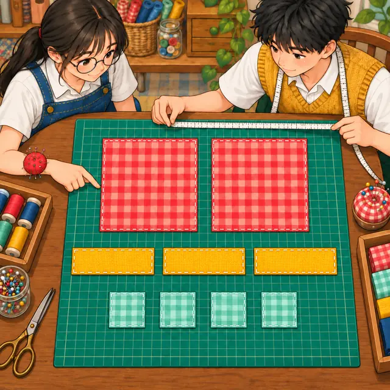
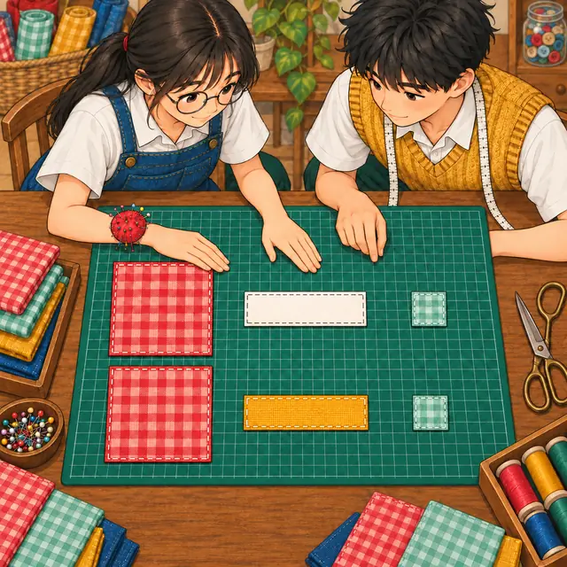
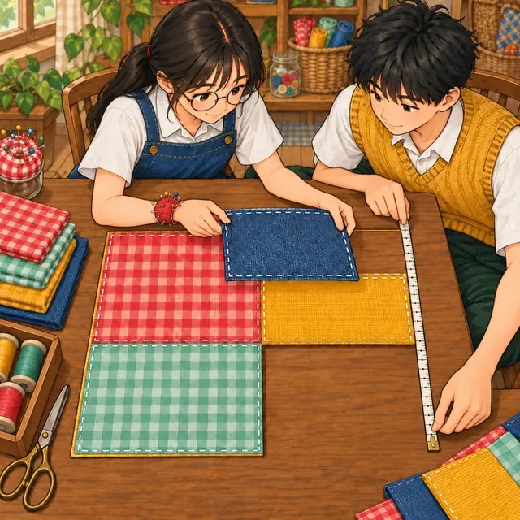

課前暖身漫畫：一共 12 塊布？
小禾和阿森各剪了一些布塊：有大方布、長條，也有小方布。小禾想知道兩人合起來有多少布，數了數說：「一共 \(12\) 塊！」阿森卻搖頭——這 \(12\) 塊大小都不一樣，可以直接加在一起嗎？這一節學完同類項，就知道該怎麼數。
重點 1：多項式的意義——\(x\) 只做加法與乘法
重點整理與敘述
- 三種布塊：邊長 \(x\) 的大方布，面積是 \(x^2\)；長 \(x\)、寬 \(1\) 的長條，面積是 \(x\)；邊長 \(1\) 的小方布，面積是 \(1\)。用它們拼成的圖形，面積都能寫成像 \(x^2 + 2x + 3\)、\(3x^2\)、\(2x\) 這樣的式子。
- 減法與「除以一個數」也可以：減一個數就是加上它的相反數，除以一個數就是乘上它的倒數，所以下面這些都是 \(x\) 的多項式： \[\begin{aligned} \frac{1}{2}x - 3 &= \frac{1}{2} \cdot x + (-3) \\ -x^2 &= (-1) \cdot x \cdot x \\ 4 &= 0 \cdot x + 4 \end{aligned}\]
- 不是多項式的情形：\(x\) 出現在分母或絕對值符號裡，例如 \(\frac{1}{x - 2}\)、\(|x|\)，就不是 \(x\) 的多項式。
- 看的是 \(x\) 的位置：分母或絕對值裡如果只有數字，例如 \(\frac{3x}{4}\)、\(|-3|x\)，一樣是多項式。要問的是「\(x\) 有沒有跑進分母或絕對值裡」，不是「式子裡有沒有分數線或絕對值」。
- 本節的多項式只有一個文字符號 \(x\)，像 \(xy + 3y\) 這種含兩個文字的式子先不討論。

視覺互動探索：多項式檢查站
點選一個式子。檢查站會看 \(x\) 有沒有跑進分母或絕對值裡，再判斷它是不是 \(x\) 的多項式：
形成性評量 (多項式的意義)
Q1. 下列哪一個式子不是 \(x\) 的多項式？
解析：答案為 C。\(\frac{6}{x^2}\) 是「\(6\) 除以 \(x^2\)」，\(x\) 在分母裡，所以不是多項式。
A 是多項式：\(\frac{x - 1}{2} = \frac{1}{2}x - \frac{1}{2}\)，分母只有數字 \(2\)。
B 是多項式：\(-x^2 + 6 = (-1) \cdot x \cdot x + 6\)。
D 是多項式：\(0.5x = 0.5 \cdot x\)，係數可以是小數。
Q2. 小禾說：「只要式子裡有分數線或絕對值符號，就一定不是 \(x\) 的多項式。」下列哪一個式子可以說明她的說法是錯的？
解析：答案為 D。\(\frac{x}{2} + |-5| = \frac{1}{2}x + 5\)，有分數線也有絕對值，卻是 \(x\) 的多項式——分母與絕對值裡都只有數字，\(x\) 沒有跑進去。
A、C 的 \(x\) 在分母裡，B 的 \(x\) 在絕對值裡，這三個都不是多項式，正好符合小禾的說法，舉它們說明不了她錯。
重點 2：項、係數與常數項——負號是係數的一部分
重點整理與敘述
- 項：在 \(7x^2 + x + 5\) 中，被加號隔開的每一部分 \(7x^2\)、\(x\)、\(5\)，都叫做這個多項式的項。
- 係數：\(7x^2\) 是二次項（\(x^2\) 項），係數是 \(7\)；\(x\) 是一次項（\(x\) 項），係數是 \(1\)，\(1\) 省略不寫；\(5\) 是常數項，也叫零次項。
- 有減號時先改寫成加法：減號連同後面的數，一起變成那一項的係數： \[\begin{aligned} & 5x^3 - 3x^2 + 1 \\ &= 5x^3 + (-3)x^2 + 0x + 1 \end{aligned}\] 所以 \(x^2\) 項的係數是 \(-3\)，不是 \(3\)。
- 沒出現的項，係數是 \(0\)：上式沒有 \(x\) 項，可以看成 \(0 \cdot x\)，所以 \(x\) 項的係數是 \(0\)。
| 多項式 | \(x^3\) 項係數 | \(x^2\) 項係數 | \(x\) 項係數 | 常數項 |
|---|---|---|---|---|
| \(5x^3 - 3x^2 + 1\) | \(5\) | \(-3\) | \(0\) | \(1\) |
| \(-x^2 + 4x\) | \(0\) | \(-1\) | \(4\) | \(0\) |
| \(x^3 - 7\) | \(1\) | \(0\) | \(0\) | \(-7\) |
視覺互動探索：係數標籤機
拉動四個係數。上面是平常的寫法，下面把每一項都寫成「係數 × \(x\) 的乘方」，藏起來的 \(1\)、負號，以及缺項的 \(0\) 都會現形：
形成性評量 (項、係數與常數項)
Q3. 多項式 \(4 - 7x^2 + x^3\) 中，\(x^2\) 項的係數與常數項分別是多少？
解析：答案為 B。改寫成加法：\(4 + (-7)x^2 + x^3\)，\(x^2\) 項的係數是 \(-7\)，常數項是 \(4\)。
A 錯：負號是係數的一部分，不能丟掉。
C 錯：常數項是不含 \(x\) 的那一項 \(4\)，寫在最前面也還是常數項。
D 錯：\(1\) 是 \(x^3\) 項的係數。
Q4. 關於多項式 \(8x^3 - 6x + 9\)，下列敘述何者正確？
解析：答案為 A。補上缺項、改寫成加法：
\[ 8x^3 + 0x^2 + (-6)x + 9 \]
沒有 \(x^2\) 項，係數是 \(0\)。
B 錯：\(x\) 項的係數是 \(-6\)。
C 錯：係數為 \(0\) 的項不算，只有 \(8x^3\)、\(-6x\)、\(9\) 三項。
D 錯：常數項是 \(9\)；\(8\) 是 \(x^3\) 項的係數。
重點 3：次數——看係數不是 \(0\) 的最高次項
重點整理與敘述
- 最高次項：係數不為 \(0\) 且次數最高的那一項。多項式的次數就是最高次項的次數。
- 例：\(x^3 - x + 1\) 的次數是 \(3\)，叫做 \(x\) 的三次多項式（三次式）；\(-3x^2 + 4\) 的次數是 \(2\)，是二次多項式。
- 先確認係數不是 \(0\)：\(0x^3 + 2x^2 + 1\) 的 \(x^3\) 項係數是 \(0\)，等於沒有這一項，所以它是二次多項式。
- 單項式：只有一項的多項式，例如 \(\frac{3}{4}x^2\)、\(-2x\)、\(13\)。
- 常數多項式：只有常數項的單項式，例如 \(13\)、\(-\frac{1}{2}\)、\(0\)。
- 零次多項式：不為 \(0\) 的常數多項式，次數規定為 \(0\)。\(13\)、\(-\frac{1}{2}\) 是零次多項式；\(0\) 是常數多項式，但不規定次數。
| 式子 | 單項式 | 常數多項式 | 次數 |
|---|---|---|---|
| \(-2x\) | 是 | 否 | \(1\) |
| \(13\) | 是 | 是 | \(0\) |
| \(0\) | 是 | 是 | 不規定 |
| \(x^2 + 1\) | 否 | 否 | \(2\) |
視覺互動探索：多項式身分證
拉動四個係數，看哪一項是最高次項、多項式是幾次。係數調成 \(0\)，那一格就空了；把四個係數全部調成 \(0\)，看看會發生什麼事：
形成性評量 (次數與單項式)
Q5. 下列哪一個是 \(x\) 的零次多項式？
解析：答案為 B。\(-\frac{2}{7}\) 是不為 \(0\) 的常數多項式，次數規定為 \(0\)。
A 錯：\(0\) 是常數多項式，但不規定次數，所以不是零次多項式。
C 錯：\(9x\) 是一次單項式。
D 錯：\(x + 1\) 是一次多項式。
Q6. 下列敘述何者正確？
解析：答案為 C。最高次項是 \(-x^2\)，係數 \(-1 \ne 0\)，所以次數是 \(2\)。
A 錯：\(4x^3\) 與 \(-1\) 是兩項，不是單項式。
B 錯：\(x^2\) 項係數是 \(0\)，等於沒有這一項；最高次項是 \(7x\)，所以是一次多項式。
D 錯：次數看的是 \(x\) 的指數 \(3\)，不是係數 \(\frac{1}{2}\)。
重點 4：含未知數的係數——要消失的寫「\(= 0\)」，要留下的寫「\(\ne 0\)」
重點整理與敘述
- 多項式的係數若含有未知數（例如 \(a - 2\)），題目會用「它是幾次多項式」來限制這些係數。只要逐項問：這一項要消失，還是要留下？
| 題目要求 | \(x^2\) 項係數 | \(x\) 項係數 | 常數項 |
|---|---|---|---|
| 常數多項式 | \(= 0\) | \(= 0\) | 任意數 |
| 一次多項式 | \(= 0\) | \(\ne 0\) | 任意數 |
| 二次多項式 | \(\ne 0\) | 任意數 | 任意數 |
- 例：若 \((a - 2)x^2 + (b + 3)x + 7\) 是常數多項式，則 \(x^2\) 項與 \(x\) 項的係數都要是 \(0\)： \[\begin{aligned} a - 2 &= 0 \Rightarrow a = 2 \\ b + 3 &= 0 \Rightarrow b = -3 \end{aligned}\]
- 「\(\ne\)」也是答案的一部分：若同一個式子要是一次多項式，條件是 \(a = 2\) 且 \(b \ne -3\)。只寫 \(a = 2\) 不夠——\(b = -3\) 時 \(x\) 項也消失，就退成常數多項式了。
- 常數項不影響次數：上例的 \(7\) 不必討論；若常數項也含有未知數，題目沒限制時它可以是任意數。
視覺互動探索：條件檢查器
選一個式子和一個目標，再拉動 \(a\)、\(b\)。檢查器會把數字代進去、逐條核對係數，看現在的式子是不是你要的那一種：
形成性評量 (含未知數的係數)
Q7. 若多項式 \((a + 6)x^2 + (b - 7)x + 4\) 是一個常數多項式，則 \(a\)、\(b\) 的值為何？
解析：答案為 D。常數多項式的 \(x^2\) 項與 \(x\) 項係數都是 \(0\)：
\[\begin{aligned} a + 6 &= 0 \Rightarrow a = -6 \\ b - 7 &= 0 \Rightarrow b = 7 \end{aligned}\]
A 錯：兩個數的正負號都弄反了。
B 錯：\(a = 6\) 時 \(a + 6 = 12\)，\(x^2\) 項還在。
C 錯：\(b \ne 7\) 是「一次多項式」的條件；常數多項式要連 \(x\) 項也消失。
Q8. 若 \((m - 8)x^2 + (n + 9)x - 2\) 是 \(x\) 的一次多項式，則 \(m\)、\(n\) 的條件為何？
解析：答案為 C。一次多項式：\(x^2\) 項要消失、\(x\) 項要留下：
\[\begin{aligned} m - 8 &= 0 \Rightarrow m = 8 \\ n + 9 &\ne 0 \Rightarrow n \ne -9 \end{aligned}\]
A 錯：\(n = -9\) 時 \(x\) 項也消失，只剩 \(-2\)，變成常數多項式。
B 錯：\(m \ne 8\) 時 \(x^2\) 項還在，是二次多項式。
D 錯：\(m = -8\) 時 \(m - 8 = -16\)，不是 \(0\)，正負號弄反了。
重點 5：升冪與降冪排列——符號跟著項一起搬
重點整理與敘述
- 升冪排列（升次排列）：各項按 \(x\) 的次數由小到大排列。
- 降冪排列（降次排列）：各項按 \(x\) 的次數由大到小排列。習慣上用降冪，本頁的答案也都寫成降冪。
- 例：把 \(3x^2 + 6x^3 - 4 + 8x\) 重新排列： \[\begin{aligned} \text{升冪：} & -4 + 8x + 3x^2 + 6x^3 \\ \text{降冪：} & 6x^3 + 3x^2 + 8x - 4 \end{aligned}\]
- 符號跟著項一起搬：每一項前面的「\(+\)」或「\(-\)」都是那一項的一部分。\(-4\) 搬到最前面時負號要帶著走；原本在最前面的 \(3x^2\) 沒寫「\(+\)」，搬到後面就要補上「\(+\)」。
- 只改順序、不改值：排好之後還是同一個多項式，項數、係數、次數都不變。
視覺互動探索：布條排序架
選一個多項式，再按「升冪」或「降冪」。每一張布條就是一項，看它們怎麼換位置——前面的正負號跟著布條一起走：
形成性評量 (升冪與降冪)
Q9. 將 \(6 - 2x^3 + x - 9x^2\) 按降冪排列，結果為何？
解析：答案為 A。次數由大到小是 \(x^3\)、\(x^2\)、\(x\)、常數，每一項帶著自己的符號：\(-2x^3\)、\(-9x^2\)、\(+x\)、\(+6\)。
B 錯：搬動時把負號弄丟了。
C 錯：這是升冪排列。
D 錯：\(x^2\) 的次數比 \(x^3\) 小，不能排在它前面。
Q10. 阿森把 \(4x - 3x^3 - 8 + x^2\) 按升冪排列，寫成 \(8 + 4x + x^2 + 3x^3\)。正確的升冪排列應該是哪一個？
解析：答案為 D。升冪是次數由小到大：常數 \(-8\)、\(4x\)、\(x^2\)、\(-3x^3\)。阿森的順序對了，卻把 \(-8\) 與 \(-3x^3\) 的負號都弄丟了。
A 錯：這是降冪排列。
B 錯：只把 \(-8\) 改回來，\(-3x^3\) 的負號還是丟了。
C 錯：常數項的次數最小，升冪時要排在最前面。
重點 6：同類項與加法——同樣大小的布才能合起來
重點整理與敘述
- 同類項：文字符號及次數都相同的項。例如在 \(3x + x^2 - 2 + 2x^2 + 1 - 4x\) 中，\(x^2\) 和 \(2x^2\)、\(3x\) 和 \(-4x\)、\(-2\) 和 \(1\) 各是一組同類項。常數項彼此也是同類項。
- 不是同類項：次數不同（\(x^2\) 與 \(x^3\)），或文字符號不同（\(x\) 與 \(y\)），即使係數一樣也不是同類項。
- 用布塊想：大方布 \(x^2\)、長條 \(x\)、小方布 \(1\) 的大小都不一樣，只有同一種布塊能數在一起。合併同類項，就是把係數相加： \[\begin{aligned} & (x^2 + 3x + 2) \\ &\quad + (2x^2 + 2x + 2) \\ &= (1 + 2)x^2 + (3 + 2)x \\ &\quad + (2 + 2) \\ &= 3x^2 + 5x + 4 \end{aligned}\]
- 不同類項不能合併：\(3x^2 + 5x\) 已經是最簡，不能寫成 \(8x^2\) 或 \(8x^3\)。
- 兩個多項式相加，結果仍然是多項式。
視覺互動探索：布塊合併桌
拉動滑桿決定兩人各有幾塊布。合在一起時，只有同樣大小的布塊能數在一起——數一數每一堆，就是合併後的係數：
形成性評量 (同類項與加法)
Q11. 下列哪一組是同類項？
解析：答案為 B。\(-5x\) 與 \(\frac{2}{3}x\) 都是 \(x\) 的一次項，文字符號與次數都相同，只是係數不同。
A、C、D 錯：兩項的係數雖然一樣，次數卻不同（三次與二次、二次與一次、零次與一次），所以不是同類項。判斷同類項看的是文字與次數，不是係數。
Q12. 計算下式，結果為何？ \[\begin{aligned} & (6x^2 - 4x + 2) \\ &\quad + (-2x^2 + 9x - 7) \end{aligned}\]
解析：答案為 D。同類項的係數相加：
\[\begin{aligned} & (6 - 2)x^2 + (-4 + 9)x + (2 - 7) \\ &= 4x^2 + 5x - 5 \end{aligned}\]
A 錯：常數項算成 \(2 + 7\)，漏看了 \(-7\) 的負號。
B 錯：把所有負號都當成正號。
C 錯：\(-4 + 9 = 5\)，不是 \(-13\)。
重點 7：直式加法與缺項——缺的那一格補 \(0\)
重點整理與敘述
- 直式：先把兩個多項式都按降冪排好，同類項上下對齊，再一欄一欄相加。用升冪也可以，只要兩列一致。
- 缺項補 \(0\)：多項式缺少某一項，代表那一項的係數是 \(0\)。直式計算時在缺項的位置補上 \(0\)（或留空位），同類項才會排在同一欄： \[\begin{array}{rrrr} & 2x^2 & +\,0x & -\,5 \\ +) & -x^2 & +\,2x & +\,1 \\ \hline & x^2 & +\,2x & -\,4 \end{array}\]
- 橫式也可以：去括號後把同類項放在一起。直式、橫式算出來一定一樣，選一種即可： \[\begin{aligned} & (2x^2 - 5) + (-x^2 + 2x + 1) \\ &= x^2 + 2x - 4 \end{aligned}\]
- 相加後的次數：三次式加二次式一定是三次式，因為 \(x^3\) 項沒有別的項能抵消它；但兩個二次式相加，不一定是二次式——兩個 \(x^2\) 項可能互相抵消： \[\begin{aligned} & (3x^2 + x) + (-3x^2 + 4) \\ &= x + 4 \end{aligned}\]

視覺互動探索：直式對齊台
選一題，比較「補 0 對齊」和「不補 0、直接靠右排」。不補 0 時，次數不同的項會擠進同一欄，就加不下去了：
形成性評量 (直式加法與缺項)
Q13. 計算 \((5x^3 - 2x + 4) + (-x^2 + 6x - 9)\)，結果為何？
解析：答案為 A。第一個式子缺 \(x^2\) 項、第二個缺 \(x^3\) 項，補 \(0\) 之後對齊：
\[\begin{array}{rrrrr} & 5x^3 & +\,0x^2 & -\,2x & +\,4 \\ +) & 0x^3 & -\,x^2 & +\,6x & -\,9 \\ \hline & 5x^3 & -\,x^2 & +\,4x & -\,5 \end{array}\]
B 錯：沒有補 \(0\)、直接靠右排，\(5x^3\) 與 \(-x^2\) 擠在同一欄，被硬加成 \(4x^3\)。
C 錯：\(-2x + 6x = 4x\)，不是 \(-8x\)。
D 錯：\(4 + (-9) = -5\)，不是 \(13\)。
Q14. 關於「兩個 \(x\) 的二次多項式相加」的結果，下列敘述何者正確？
解析：答案為 C。兩個 \(x^2\) 項的係數若互為相反數，相加後 \(x^2\) 項就消失了，例如
\[\begin{aligned} & (4x^2 + x) + (-4x^2 + 3) \\ &= x + 3 \end{aligned}\]
就是一次多項式。
A 錯：上面就是反例。
B 錯：加法只是把同類項的係數相加，次數不會變高，\(x^2 + x^2 = 2x^2\) 還是二次。
D 錯：\((x^2 + 1) + (-x^2 + 2) = 3\)，結果是常數多項式。
重點 8：多項式的減法——括號前是減號，每一項都要變號
重點整理與敘述
- 減法就是加上相反數：減一個多項式，等於加上它每一項的相反數；合併同類項時就變成係數相減。
- 去括號的符號規則（七年級學過）： \[\begin{aligned} +(a + b) &= a + b \\ +(a - b) &= a - b \\ -(a + b) &= -a - b \\ -(a - b) &= -a + b \end{aligned}\]
- 橫式：括號前是減號，括號裡每一項都要變號： \[\begin{aligned} & (x^2 + 5x + 1) - (2 - 3x^2) \\ &= x^2 + 5x + 1 - 2 + 3x^2 \\ &= 4x^2 + 5x - 1 \end{aligned}\] 括號裡的 \(2\) 變成 \(-2\)、\(-3x^2\) 變成 \(+3x^2\)。
- 直式：同類項對齊後，每一欄都是「上減下」。最常見的錯誤是只有第一欄記得減，後面幾欄不小心當成加法；也可以先把下面那一列全部變號，改成直式加法來算。
- 要減的多項式如果需要重新排列，各項的「\(+\)」「\(-\)」號也要跟著搬（重點 5）。
視覺互動探索：減法檢查台
選一題，切換三種看法：橫式去括號、直式逐欄相減，以及最常見的錯誤——括號裡只有第一項變號：
形成性評量 (多項式的減法)
Q15. 計算 \((6x^2 - x + 3) - (2x^2 - 5x - 4)\)，結果為何？
解析：答案為 B。去括號時每一項都變號：
\[\begin{aligned} & (6x^2 - x + 3) - (2x^2 - 5x - 4) \\ &= 6x^2 - x + 3 \\ &\quad - 2x^2 + 5x + 4 \\ &= 4x^2 + 4x + 7 \end{aligned}\]
A 錯：只有第一項 \(2x^2\) 變號，\(-5x\)、\(-4\) 忘了變號。
C 錯：把減法當成加法。
D 錯：常數項應為 \(3 - (-4) = 7\)，不是 \(3 - 4\)。
Q16. 阿森用直式計算 \((-3x^2 + 4x - 2) - (2x^2 - x - 6)\)，得到 \(-5x^2 + 3x - 8\)。下列哪一個說法正確？
解析：答案為 B。每一欄都是「上減下」：
\[\begin{aligned} -3x^2 - 2x^2 &= -5x^2 \\ 4x - (-x) &= 5x \\ -2 - (-6) &= 4 \end{aligned}\]
阿森的 \(x\) 項算成 \(4x + (-x) = 3x\)、常數項算成 \(-2 + (-6) = -8\)，都是用加的。
A 錯：\(x\) 項與常數項都不對。
C 錯：\(x^2\) 那一欄 \(-3 - 2 = -5\) 是對的。
D 錯：那是把兩式前後對調再相減的結果，每一項都差一個負號。
重點 9：加減混合運算——由內而外去括號
重點整理與敘述
- 一般步驟：⑴ 去括號；⑵ 合併同類項。
- 連續加減：每一個括號前面是什麼號，就照去括號的規則處理： \[\begin{aligned} & (3x^2 + 6x - 9) - (-3x^2 + 4x) \\ &\quad + (-2x + 3) \\ &= 3x^2 + 6x - 9 + 3x^2 \\ &\quad - 4x - 2x + 3 \\ &= 6x^2 - 6 \end{aligned}\]
- 有中括號時由內而外：先把中括號裡的小括號去掉、整理成一個多項式，再去中括號： \[\begin{aligned} & (-3x^2 - 7 + x) \\ &\quad - [(1 - 2x^2) - (2x + 6)] \\ &= (-3x^2 - 7 + x) \\ &\quad - (-2x^2 - 2x - 5) \\ &= -3x^2 - 7 + x \\ &\quad + 2x^2 + 2x + 5 \\ &= -x^2 + 3x - 2 \end{aligned}\]
- 中括號前是減號：去掉中括號時，裡面每一項都要變號。先把中括號裡整理好再變號，項數比較少，比較不會漏。
視覺互動探索：去括號步驟機
選一題，按「下一步」一步一步去括號。注意中括號前面的符號：是減號時，整理好的每一項都要變號：
形成性評量 (加減混合運算)
Q17. 計算下式，結果為何？ \[\begin{aligned} & (4x^2 - 3) \\ &\quad - [(x^2 + 2x) - (5x - 6)] \end{aligned}\]
解析：答案為 A。先整理中括號裡面，再去中括號：
\[\begin{aligned} & (4x^2 - 3) \\ &\quad - [(x^2 + 2x) - (5x - 6)] \\ &= (4x^2 - 3) - (x^2 - 3x + 6) \\ &= 4x^2 - 3 - x^2 + 3x - 6 \\ &= 3x^2 + 3x - 9 \end{aligned}\]
B 錯：去中括號時只有 \(x^2\) 變號，\(-3x\)、\(+6\) 忘了變號。
C 錯：中括號裡的 \(-(5x - 6)\) 算成 \(-5x - 6\)，\(-6\) 那項忘了變號。
D 錯：中括號前是減號，卻整個沒變號就去掉了。
Q18. 計算下式，結果為何？ \[\begin{aligned} & (2x^2 - 5x) + (x - 4) \\ &\quad - (3x^2 - 2x - 1) \end{aligned}\]
解析：答案為 C。三個括號依序去掉，最後一個括號前是減號，每一項都變號：
\[\begin{aligned} & (2x^2 - 5x) + (x - 4) \\ &\quad - (3x^2 - 2x - 1) \\ &= 2x^2 - 5x + x - 4 \\ &\quad - 3x^2 + 2x + 1 \\ &= -x^2 - 2x - 3 \end{aligned}\]
A 錯：最後一個括號只有 \(3x^2\) 變號，\(-2x\)、\(-1\) 忘了變號。
B 錯：把最後的減法當成加法。
D 錯：\(x\) 項是 \(-5x + x + 2x = -2x\)，正負號算錯了。
重點 10：反求多項式——\(A + B = C\)，所以 \(A = C - B\)
重點整理與敘述
- 和數字一樣的道理：\(\square + 3 = 10\)，所以 \(\square = 10 - 3\)。多項式也一樣：若 \(A + B = C\)，則 \(A = C - B\)。
- 例：若 \[\begin{aligned} & A + (-4x^2 + 1 + 5x) \\ &= x^3 + 5 - 2x \end{aligned}\] 則 \[\begin{aligned} A &= (x^3 + 5 - 2x) \\ &\quad - (-4x^2 + 1 + 5x) \\ &= x^3 + 5 - 2x \\ &\quad + 4x^2 - 1 - 5x \\ &= x^3 + 4x^2 - 7x + 4 \end{aligned}\]
| 已知 | 所以 |
|---|---|
| \(A + B = C\) | \(A = C - B\) |
| \(A - B = C\) | \(A = C + B\) |
| \(B - A = C\) | \(A = B - C\) |
- 算完一定要驗算：把求出的 \(A\) 代回原來的關係，加加看（或減減看）是不是等於 \(C\)。
- 常見錯誤：明明是 \(A + B = C\)，卻寫成 \(A = B - C\)。減的順序反了，答案每一項都差一個負號。

視覺互動探索：補布計算台
選一種關係，拉動 \(B\) 的三個係數（\(C\) 固定是 \(3x^2 + x - 2\)），看 \(A\) 怎麼求出來。最後一列會把 \(A\) 代回去驗算：
形成性評量 (反求多項式)
Q19. 一個多項式與 \(3x^2 - 4x + 1\) 相加後，得到 \(-x^2 + 2x + 6\)。這個多項式為何？
解析：答案為 A。所求 \(= C - B\)：
\[\begin{aligned} & (-x^2 + 2x + 6) \\ &\quad - (3x^2 - 4x + 1) \\ &= -x^2 + 2x + 6 \\ &\quad - 3x^2 + 4x - 1 \\ &= -4x^2 + 6x + 5 \end{aligned}\]
驗算：
\[\begin{aligned} & (-4x^2 + 6x + 5) \\ &\quad + (3x^2 - 4x + 1) \\ &= -x^2 + 2x + 6 \end{aligned}\]
B 錯：減的順序反了，算成 \((3x^2 - 4x + 1) - (-x^2 + 2x + 6)\)。
C 錯：把兩個式子加起來了。
D 錯：去括號時只有 \(3x^2\) 變號，\(-4x\)、\(+1\) 忘了變號。
Q20. 若多項式 \(A\) 減去 \(2x^2 + 7x - 3\) 之後，得到 \(x^2 - 6x + 8\)，則 \(A\) 為何？
解析：答案為 D。\(A - B = C\)，所以 \(A = C + B\)：
\[\begin{aligned} A &= (x^2 - 6x + 8) \\ &\quad + (2x^2 + 7x - 3) \\ &= 3x^2 + x + 5 \end{aligned}\]
驗算：
\[\begin{aligned} & (3x^2 + x + 5) \\ &\quad - (2x^2 + 7x - 3) \\ &= x^2 - 6x + 8 \end{aligned}\]
A 錯：算成 \(C - B\)；\(A\) 減掉 \(B\) 才得到 \(C\)，所以要把 \(B\) 加回去。
B 錯：算成 \(B - C\)。
C 錯：\(x\) 項是 \(-6x + 7x = x\)，不是 \(-x\)。
小節總結與核心回顧
多項式速查表
- 多項式：數與 \(x\) 只做加法、乘法；\(x\) 跑進分母或絕對值就不是。
- 項與係數：減號連同數字一起當係數；沒出現的項係數是 \(0\)。
- 次數：看係數不為 \(0\) 的最高次項；\(0\) 不規定次數。
- 係數條件：要消失的係數寫 \(= 0\)，要留下的寫 \(\ne 0\)。
- 排列：升冪由小到大、降冪由大到小，符號跟著項一起搬。
- 同類項與加法：文字與次數都相同才合併，係數相加。
- 直式與缺項：同類項上下對齊，缺項補 \(0\)；二次加二次不一定是二次。
- 減法：括號前是減號，每一項都變號；直式每一欄都是上減下。
- 混合運算：由內而外去括號，再合併同類項。
- 反求：\(A + B = C\) 時 \(A = C - B\)，算完代回去驗算。
回到拼布工坊：一共幾塊布？
小禾的 12 塊
小禾有 \(1\) 塊大方布、\(3\) 條長條、\(2\) 塊小方布，面積是 \(x^2 + 3x + 2\)；阿森有 \(2\) 塊大方布、\(2\) 條長條、\(2\) 塊小方布，面積是 \(2x^2 + 2x + 2\)。小禾把 \(12\) 塊直接加起來，等於把大小不同的布當成同一種。同樣大小的放在一起數： \[\begin{aligned} & (x^2 + 3x + 2) + (2x^2 + 2x + 2) \\ &= 3x^2 + 5x + 4 \end{aligned}\] 也就是 \(3\) 塊大方布、\(5\) 條長條、\(4\) 塊小方布。
為什麼不能直接加？
\(x\) 不知道是多少，大方布 \(x^2\) 和長條 \(x\) 的大小關係會跟著 \(x\) 改變，沒辦法換算成同一種單位。只有文字與次數都相同的同類項，才能把係數相加。
下一節預告
這一節只做了加減。下一節〈多項式的乘除運算〉要把上一節的分配律與乘法公式用到多項式上，例如 \((2x + 1)(x^2 - 3x + 4)\)，還要學多項式的除法。